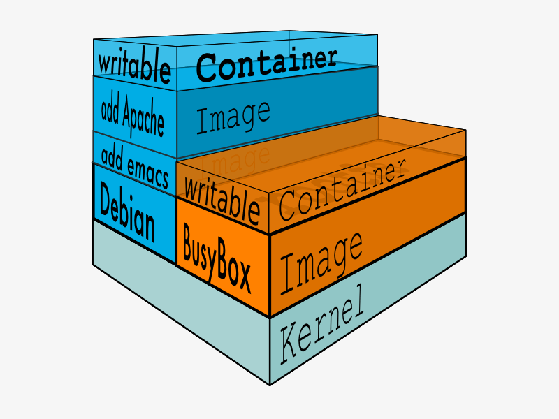

- 00 开篇词 迎难而上，做云原生时代的弄潮儿.md.html
- 00 课前准备 动手实践才是最好的学习方式.md.html
- 01 初识容器：万事开头难.md.html
- 02 被隔离的进程：一起来看看容器的本质.md.html
- 03 容器化的应用：会了这些你就是Docker高手.md.html
- 04 创建容器镜像：如何编写正确、高效的Dockerfile.md.html
- 05 镜像仓库：该怎样用好Docker Hub这个宝藏.md.html
- 06 打破次元壁：容器该如何与外界互联互通.md.html
- 07 实战演练：玩转Docker.md.html
- 08 视频：入门篇实操总结.md.html
- 09 走近云原生：如何在本机搭建小巧完备的Kubernetes环境.md.html
- 10 自动化的运维管理：探究Kubernetes工作机制的奥秘.md.html
- 11 YAML：Kubernetes世界里的通用语.md.html
- 12 Pod：如何理解这个Kubernetes里最核心的概念？.md.html
- 13 Job_CronJob：为什么不直接用Pod来处理业务？.md.html
- 14 ConfigMap_Secret：怎样配置、定制我的应用.md.html
- 15 实战演练：玩转Kubernetes（1）.md.html
- 16 视频：初级篇实操总结.md.html
- 17 更真实的云原生：实际搭建多节点的Kubernetes集群.md.html
- 18 Deployment：让应用永不宕机.md.html
- 19 Daemonset：忠实可靠的看门狗.md.html
- 20 Service：微服务架构的应对之道.md.html
- 21 Ingress：集群进出流量的总管.md.html
- 22 实战演练：玩转Kubernetes（2）.md.html
- 23 视频：中级篇实操总结.md.html
- 24 PersistentVolume：怎么解决数据持久化的难题？.md.html
- 25 PersistentVolume + NFS：怎么使用网络共享存储？.md.html
- 26 StatefulSet：怎么管理有状态的应用？.md.html
- 27 滚动更新：如何做到平滑的应用升级降级？.md.html
- 28 应用保障：如何让Pod运行得更健康？.md.html
- 29 集群管理：如何用名字空间分隔系统资源？.md.html
- 30 系统监控：如何使用Metrics Server和Prometheus？.md.html
- 31 网络通信：CNI是怎么回事？又是怎么工作的？.md.html
- 32 实战演练：玩转Kubernetes（3）.md.html
- 33 视频：高级篇实操总结.md.html
- 加餐 docker-compose：单机环境下的容器编排工具.md.html
- 加餐 谈谈Kong Ingress Controller.md.html
- 结束语 是终点，更是起点.md.html
- 捐赠
04 创建容器镜像：如何编写正确、高效的Dockerfile
你好，我是Chrono。
上一次的课程里我们一起学习了容器化的应用，也就是被打包成镜像的应用程序，然后再用各种Docker命令来运行、管理它们。
那么这又会带来一个疑问：这些镜像是怎么创建出来的？我们能不能够制作属于自己的镜像呢？
所以今天，我就来讲解镜像的内部机制，还有高效、正确地编写Dockerfile制作容器镜像的方法。
镜像的内部机制是什么
现在你应该知道，镜像就是一个打包文件，里面包含了应用程序还有它运行所依赖的环境，例如文件系统、环境变量、配置参数等等。
环境变量、配置参数这些东西还是比较简单的，随便用一个manifest清单就可以管理，真正麻烦的是文件系统。为了保证容器运行环境的一致性，镜像必须把应用程序所在操作系统的根目录，也就是rootfs，都包含进来。
虽然这些文件里不包含系统内核（因为容器共享了宿主机的内核），但如果每个镜像都重复做这样的打包操作，仍然会导致大量的冗余。可以想象，如果有一千个镜像，都基于Ubuntu系统打包，那么这些镜像里就会重复一千次Ubuntu根目录，对磁盘存储、网络传输都是很大的浪费。
很自然的，我们就会想到，应该把重复的部分抽取出来，只存放一份Ubuntu根目录文件，然后让这一千个镜像以某种方式共享这部分数据。
这个思路，也正是容器镜像的一个重大创新点：分层，术语叫“Layer”。
容器镜像内部并不是一个平坦的结构，而是由许多的镜像层组成的，每层都是只读不可修改的一组文件，相同的层可以在镜像之间共享，然后多个层像搭积木一样堆叠起来，再使用一种叫“Union FS联合文件系统”的技术把它们合并在一起，就形成了容器最终看到的文件系统（图片来源）。

我来拿大家都熟悉的千层糕做一个形象的比喻吧。
千层糕也是由很多层叠加在一起的，从最上面可以看到每层里面镶嵌的葡萄干、核桃、杏仁、青丝等，每一层糕就相当于一个Layer，干果就好比是Layer里的各个文件。但如果某两层的同一个位置都有干果，也就是有文件同名，那么我们就只能看到上层的文件，而下层的就被屏蔽了。
你可以用命令 docker inspect 来查看镜像的分层信息，比如nginx:alpine镜像：
docker inspect nginx:alpine
它的分层信息在“RootFS”部分：-

通过这张截图就可以看到，nginx:alpine镜像里一共有6个Layer。
相信你现在也就明白，之前在使用 docker pull、docker rmi 等命令操作镜像的时候，那些“奇怪”的输出信息是什么了，其实就是镜像里的各个Layer。Docker会检查是否有重复的层，如果本地已经存在就不会重复下载，如果层被其他镜像共享就不会删除，这样就可以节约磁盘和网络成本。
Dockerfile是什么
知道了容器镜像的内部结构和基本原理，我们就可以来学习如何自己动手制作容器镜像了，也就是自己打包应用。
在之前我们讲容器的时候，曾经说过容器就是“小板房”，镜像就是“样板间”。那么，要造出这个“样板间”，就必然要有一个“施工图纸”，由它来规定如何建造地基、铺设水电、开窗搭门等动作。这个“施工图纸”就是“Dockerfile”。
比起容器、镜像来说，Dockerfile非常普通，它就是一个纯文本，里面记录了一系列的构建指令，比如选择基础镜像、拷贝文件、运行脚本等等，每个指令都会生成一个Layer，而Docker顺序执行这个文件里的所有步骤，最后就会创建出一个新的镜像出来。
我们来看一个最简单的Dockerfile实例：
# Dockerfile.busybox
FROM busybox # 选择基础镜像
CMD echo "hello world" # 启动容器时默认运行的命令
这个文件里只有两条指令。
第一条指令是 FROM，所有的Dockerfile都要从它开始，表示选择构建使用的基础镜像，相当于“打地基”，这里我们使用的是busybox。
第二条指令是 CMD，它指定 docker run 启动容器时默认运行的命令，这里我们使用了echo命令，输出“hello world”字符串。
现在有了Dockerfile这张“施工图纸”，我们就可以请出“施工队”了，用 docker build 命令来创建出镜像：
docker build -f Dockerfile.busybox .
Sending build context to Docker daemon 7.68kB
Step 1/2 : FROM busybox
---> d38589532d97
Step 2/2 : CMD echo "hello world"
---> Running in c5a762edd1c8
Removing intermediate container c5a762edd1c8
---> b61882f42db7
Successfully built b61882f42db7
你需要特别注意命令的格式，用 -f 参数指定Dockerfile文件名，后面必须跟一个文件路径，叫做“构建上下文”（build’s context），这里只是一个简单的点号，表示当前路径的意思。
接下来，你就会看到Docker会逐行地读取并执行Dockerfile里的指令，依次创建镜像层，再生成完整的镜像。
新的镜像暂时还没有名字（用 docker images 会看到是 <none>），但我们可以直接使用“IMAGE ID”来查看或者运行：
docker inspect b61
docker run b61
怎样编写正确、高效的Dockerfile
大概了解了Dockerfile之后，我再来讲讲编写Dockerfile的一些常用指令和最佳实践，帮你在今后的工作中把它写好、用好。
首先因为构建镜像的第一条指令必须是 FROM，所以基础镜像的选择非常关键。如果关注的是镜像的安全和大小，那么一般会选择Alpine；如果关注的是应用的运行稳定性，那么可能会选择Ubuntu、Debian、CentOS。
FROM alpine:3.15 # 选择Alpine镜像
FROM ubuntu:bionic # 选择Ubuntu镜像
我们在本机上开发测试时会产生一些源码、配置等文件，需要打包进镜像里，这时可以使用 COPY 命令，它的用法和Linux的cp差不多，不过拷贝的源文件必须是“构建上下文”路径里的，不能随意指定文件。也就是说，如果要从本机向镜像拷贝文件，就必须把这些文件放到一个专门的目录，然后在 docker build 里指定“构建上下文”到这个目录才行。
这里有两个 COPY 命令示例，你可以看一下：
COPY ./a.txt /tmp/a.txt # 把构建上下文里的a.txt拷贝到镜像的/tmp目录
COPY /etc/hosts /tmp # 错误！不能使用构建上下文之外的文件
接下来要说的就是Dockerfile里最重要的一个指令 RUN ，它可以执行任意的Shell命令，比如更新系统、安装应用、下载文件、创建目录、编译程序等等，实现任意的镜像构建步骤，非常灵活。
RUN 通常会是Dockerfile里最复杂的指令，会包含很多的Shell命令，但Dockerfile里一条指令只能是一行，所以有的 RUN 指令会在每行的末尾使用续行符 \，命令之间也会用 && 来连接，这样保证在逻辑上是一行，就像下面这样：
RUN apt-get update \
&& apt-get install -y \
build-essential \
curl \
make \
unzip \
&& cd /tmp \
&& curl -fSL xxx.tar.gz -o xxx.tar.gz\
&& tar xzf xxx.tar.gz \
&& cd xxx \
&& ./config \
&& make \
&& make clean
有的时候在Dockerfile里写这种超长的 RUN 指令很不美观，而且一旦写错了，每次调试都要重新构建也很麻烦，所以你可以采用一种变通的技巧：把这些Shell命令集中到一个脚本文件里，用 COPY 命令拷贝进去再用 RUN 来执行：
COPY setup.sh /tmp/ # 拷贝脚本到/tmp目录
RUN cd /tmp && chmod +x setup.sh \ # 添加执行权限
&& ./setup.sh && rm setup.sh # 运行脚本然后再删除
RUN 指令实际上就是Shell编程，如果你对它有所了解，就应该知道它有变量的概念，可以实现参数化运行，这在Dockerfile里也可以做到，需要使用两个指令 ARG 和 ENV。
它们区别在于 ARG 创建的变量只在镜像构建过程中可见，容器运行时不可见，而 ENV 创建的变量不仅能够在构建镜像的过程中使用，在容器运行时也能够以环境变量的形式被应用程序使用。
下面是一个简单的例子，使用 ARG 定义了基础镜像的名字（可以用在“FROM”指令里），使用 ENV 定义了两个环境变量：
ARG IMAGE_BASE="node"
ARG IMAGE_TAG="alpine"
ENV PATH=$PATH:/tmp
ENV DEBUG=OFF
还有一个重要的指令是 EXPOSE，它用来声明容器对外服务的端口号，对现在基于Node.js、Tomcat、Nginx、Go等开发的微服务系统来说非常有用：
EXPOSE 443 # 默认是tcp协议
EXPOSE 53/udp # 可以指定udp协议
讲了这些Dockerfile指令之后，我还要特别强调一下，因为每个指令都会生成一个镜像层，所以Dockerfile里最好不要滥用指令，尽量精简合并，否则太多的层会导致镜像臃肿不堪。
docker build是怎么工作的
Dockerfile必须要经过 docker build 才能生效，所以我们再来看看 docker build 的详细用法。
刚才在构建镜像的时候，你是否对“构建上下文”这个词感到有些困惑呢？它到底是什么含义呢？
我觉得用Docker的官方架构图来理解会比较清楚（注意图中与“docker build”关联的虚线）。
因为命令行“docker”是一个简单的客户端，真正的镜像构建工作是由服务器端的“Docker daemon”来完成的，所以“docker”客户端就只能把“构建上下文”目录打包上传（显示信息 Sending build context to Docker daemon ），这样服务器才能够获取本地的这些文件。

明白了这一点，你就会知道，“构建上下文”其实与Dockerfile并没有直接的关系，它其实指定了要打包进镜像的一些依赖文件。而 COPY 命令也只能使用基于“构建上下文”的相对路径，因为“Docker daemon”看不到本地环境，只能看到打包上传的那些文件。
但这个机制也会导致一些麻烦，如果目录里有的文件（例如readme/.git/.svn等）不需要拷贝进镜像，docker也会一股脑地打包上传，效率很低。
为了避免这种问题，你可以在“构建上下文”目录里再建立一个 .dockerignore 文件，语法与 .gitignore 类似，排除那些不需要的文件。
下面是一个简单的示例，表示不打包上传后缀是“swp”“sh”的文件：
# docker ignore
*.swp
*.sh
另外关于Dockerfile，一般应该在命令行里使用 -f 来显式指定。但如果省略这个参数，docker build 就会在当前目录下找名字是 Dockerfile 的文件。所以，如果只有一个构建目标的话，文件直接叫“Dockerfile”是最省事的。
现在我们使用 docker build 应该就没什么难点了，不过构建出来的镜像只有“IMAGE ID”没有名字，不是很方便。
为此你可以加上一个 -t 参数，也就是指定镜像的标签（tag），这样Docker就会在构建完成后自动给镜像添加名字。当然，名字必须要符合上节课里的命名规范，用 : 分隔名字和标签，如果不提供标签默认就是“latest”。
小结
好了，今天我们一起学习了容器镜像的内部结构，重点理解容器镜像是由多个只读的Layer构成的，同一个Layer可以被不同的镜像共享，减少了存储和传输的成本。
如何编写Dockerfile内容稍微多一点，我再简单做个小结：
- 创建镜像需要编写Dockerfile，写清楚创建镜像的步骤，每个指令都会生成一个Layer。
- Dockerfile里，第一个指令必须是
FROM，用来选择基础镜像，常用的有Alpine、Ubuntu等。其他常用的指令有：COPY、RUN、EXPOSE，分别是拷贝文件，运行Shell命令，声明服务端口号。 docker build需要用-f来指定Dockerfile，如果不指定就使用当前目录下名字是“Dockerfile”的文件。docker build需要指定“构建上下文”，其中的文件会打包上传到Docker daemon，所以尽量不要在“构建上下文”中存放多余的文件。- 创建镜像的时候应当尽量使用
-t参数，为镜像起一个有意义的名字，方便管理。
今天讲了不少，但关于创建镜像还有很多高级技巧等待你去探索，比如使用缓存、多阶段构建等等，你可以再参考Docker官方文档（https://docs.docker.com/engine/reference/builder/），或者一些知名应用的镜像（如Nginx、Redis、Node.js等）进一步学习。
课下作业
最后是课下作业时间，这里有一个完整的Dockerfile示例，你可以尝试着去解释一下它的含义，然后再自己构建一下：
# Dockerfile
# docker build -t ngx-app .
# docker build -t ngx-app:1.0 .
ARG IMAGE_BASE="nginx"
ARG IMAGE_TAG="1.21-alpine"
FROM ${IMAGE_BASE}:${IMAGE_TAG}
COPY ./default.conf /etc/nginx/conf.d/
RUN cd /usr/share/nginx/html \
&& echo "hello nginx" > a.txt
EXPOSE 8081 8082 8083
当然还有两个思考题：
- 镜像里的层都是只读不可修改的，但容器运行的时候经常会写入数据，这个冲突应该怎么解决呢？（答案在本期找）
- 你能再列举一下镜像的分层结构带来了哪些好处吗？
欢迎积极留言。如果你觉得有收获，也欢迎分享给身边的朋友同事一起讨论学习。

© 2019 - 2023 Liangliang Lee. Powered by gin and hexo-theme-book.